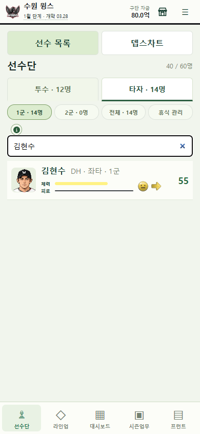
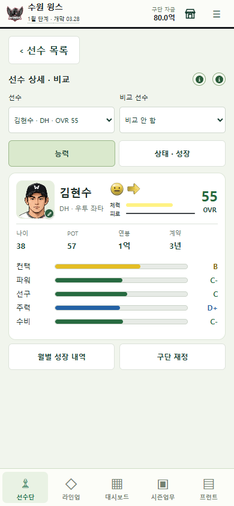
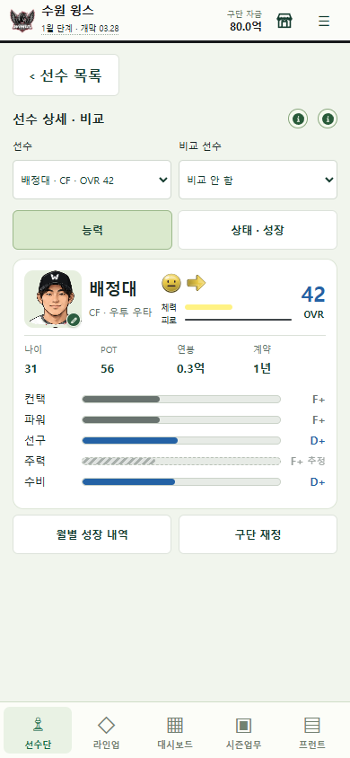
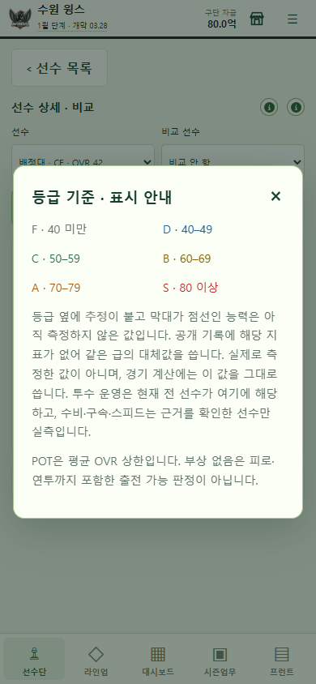

LEGACY 9 · VERSION 0.2.7 · 2026-09-22
기록이 있던 선수는 복원하고,
아직 모르는 값은 숨기지 않습니다.
과거 1군 기록으로 기본 능력치를 보완하고, 미측정 축은 실제 값과 구분되는 추정 등급으로 표시했습니다. 새 게임의 선수 읽기는 좋아졌지만 근거 없는 수치를 새로 만들지는 않았습니다.
이번 버전의 결과
기록 기반 복원
2023~2025년 1군 시즌 기록만 사용해 체력·컨택·파워·선구 또는 체력·구위·변화·제구를 복원했습니다. 2026 성적과 통산 행은 제외했고, 타자 100PA·투수 20IP 미만 등 표본이 부족한 10명은 그대로 보류했습니다.
추정값을 읽을 수 있게
미측정 축을 `—`로 가리던 방식을 폐기했습니다. 화면은 대체값 43/37의 등급과 길이를 보여 주되, 흐린 글자·점선 빗금 막대·“추정” 꼬리표로 실측과 구분합니다. 값과 경기 계산은 바꾸지 않았습니다.
모바일 실제 화면




복원 전후와 보존 경계
| 구분 | 변경 | 보존한 것 |
|---|---|---|
| 1군 기본 능력 | 57명 · 228축 복원 | 표본 미달 10명은 복원 보류 |
| 수비 | 2001~2024 이력으로 122명 갱신 | 연결 근거 없는 선수는 추정 유지 |
| 미측정 표시 | 등급·막대·추정 꼬리표 표시 | 대체값 43/37과 계산식 불변 |
| 저장 | 새 게임부터 새 로스터 적용 | 진행 중 베타 세이브 소급 수정 없음 |
| 엔진 | 검증 산출물만 새 데이터에 맞춰 재생성 | 경기·성장·노쇠·정산·AI 식 불변 |
검증: 현재 main `25b331b`에서 타입 검사, 전체 468개 검사, 프로덕션 빌드를 다시 통과했습니다. 모바일 Chromium 390×844에서 새 게임→선수단→검색→상세→도움말을 실제 조작했고 페이지 오류·4xx·가로 넘침이 없었습니다.
아직 해결하지 않은 부분
2군 140명은 여전히 전원 OVR 37입니다. 원문에는 이름·나이와 “No stats, Development Squad”만 있고 2군 성적이 없습니다. 742축의 대체값을 임의 분포로 바꾸면 경기 계산까지 달라지므로 이번 버전에서는 건드리지 않았습니다.
- 투수 운영: 근거 연결 0명 / 미적용 120명
- 투수 구속: 미적용 66명
- 타자 수비: 미적용 18명
- 타자 스피드: 미적용 2명
물리 스마트폰과 전체 시즌 UI 완주는 이번 보고서에서 새로 검증하지 않았습니다. 퓨처스 성적 자료가 들어오면 기존 수집·신원 연결 경로로 처리합니다.
근거와 다음 작은 작업
브라우저 검증복원 결산수비 이력 적용 설명현재 상태
다음: ECON-FANS-022에서 팀훈련 기본 제공·월간 집중육성 분리안을 현행 포인트 경쟁과 동일한 연간 기회로 비교합니다. 검토 전에는 가격·배수·잔액을 바꾸지 않습니다.
공개 게임은 별도 GitHub Pages 배포 기록에 따르며, 이 HTML 보고서 작성 자체는 게임 로직이나 사용자 저장을 변경하지 않습니다.